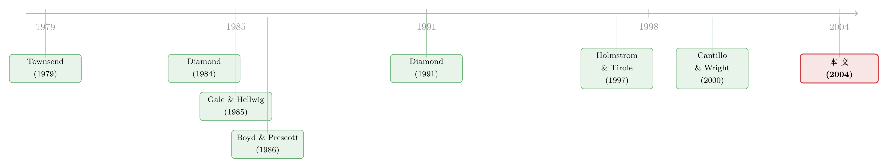

银行从哪里来，又为什么不肯把生意做绝？
本文读的是 Cantillo (2004, Review of Financial Studies)：在一个一般均衡模型里，放贷技术不是上天随机发的，而是投资者花钱「买」来的——谁升级了重组技术，谁就顺手变成了银行；但与储户的冲突又给银行划了一条天花板，于是市场自动分成三层——现金充裕的公司直接发债，资源中等的公司找银行，钱太少的公司一分钱也借不到。
1 一个被我们当成「天经地义」的问题
我们太习惯一个世界的样子了：大公司发债，中小公司找银行，而真正一穷二白的创业者，往往连银行的门都进不去。教科书把这套分层讲得云淡风轻——仿佛它本就该如此。
但只要你停下来追问一句，麻烦就来了。
银行到底是从哪里冒出来的？我们总说「银行擅长重组、擅长监督」，可这个「擅长」是谁赋予它的？如果重组一家陷入困境的公司真有那么大的好处，为什么不是所有投资者都去学这门手艺、人人都当银行？反过来，如果银行真的那么能干，它为什么不把债券市场彻底挤垮、把所有公司都收进自己门下，反倒留下一大片江山给那些「技术更差」的债券持有人？
这就是 Cantillo (2004) 这篇论文要啃的硬骨头。它的野心，是不把「银行擅长什么」当成外生的设定，而是把银行的诞生、扩张的边界、以及它和债券市场的分工，全部从一个统一的一般均衡 (general equilibrium) 框架里长出来。一句话：别再假设银行是好重组者了，让我们来解释——为什么好的重组者会主动变成银行。
2 故事的起点：一项可以「花钱升级」的放贷技术
先把舞台搭好。
经济里有两类风险中性的人。一类是 企业家 (entrepreneurs)，他们手里有个项目，需要固定投资 1（标准化），项目期望回报是 m，但实际回报是个随机变量 s ∈ [0,1]，密度 f(s) 满足递增风险率 (increasing hazard rate) 性质。企业家彼此唯一的区别，是自有资金 e < 1——钱不够，所以必须向外借 1−e。
另一类是 投资者 (investors)，竞争、风险中性，手里有个永远可选的安全资产，毛回报 r_f。关键的设定在这里：投资者手上有一套通用的放贷技术 (generic lending technology)，但他可以花钱把它升级——付出自有资本的一个比例 l，就能换来一套更高效的重组技术。
为什么重组技术值钱？因为一旦企业家违约，投资者介入接管是要花时间、要打折的。论文用一个 代价高昂的状态核查 (costly state verification, CSV) 框架来刻画：接管会让项目收入按比例 u 蒸发掉。Cantillo 假设银行的重组损失更小，即 u < ū（带横杠的 ū 是通用技术、也就是债券持有人的损失率）。这个差距不是凭空写的——Gilson, Kose, and Lang (1990) 的数据显示，用银行债的公司更容易走「私下重组」这条又快又省的路；而 Franks and Torous (1994) 与 Tashjian, Lease, and McConnell (1996) 量出过私下重组、预包装破产、正式破产的回收率分别是 80%、73%、51%——重组方式不同，损失天差地别。
于是，升级了重组技术的投资者，自然就有动力把这套本事铺得越广越好。怎么铺？不必逼着所有人都去学，他只要借别人的钱来放贷就行了——这，就是银行。论文里一句话点破：专业投资者之所以叫银行，是因为「均衡里他们用别人的钱、外加自己的钱去放贷」。
接着，一个自然的问题是：既然升级技术这么好，会不会所有人都去升级？
3 第一个关键转折：免费的技术会毁掉中介
论文先做了一个思想实验：假如升级是免费的（l = 0）会怎样？
答案有点反直觉但很干净：所有人都会去升级，而金融中介会彻底消失。
道理很简单。如果你自己零成本就能变成银行，你凭什么要把钱存进别人的银行、去当一个收益更低的储户？大家一窝蜂全变成专业投资者，没有人愿意当存款人，中介这件事根本无从谈起。论文的 Corollary 1 把这点说得很实：当 l = 0，专业投资者的利润函数处处不低于通用投资者，他们能服务更广的企业、且要价更低（b(x) < b̄(x)）。
这就逼出了真正关键的一步：中介之所以存在，恰恰因为升级不是免费的。
当 l > 0，lW_i 是一笔沉没成本。它不直接改变竞争，却悄悄改变了两件事：它砍掉了专业投资者的一部分资本，又抬高了他后续的边际借款成本。专业化会一直进行，直到边际上那个投资者「用缩水后的财富跑专业技术」和「拿全部财富跑通用技术」赚得一样多为止。于是银行的数量被自动钉死在一个均衡上——这正是 l = 0 的世界里缺失的那根锚。
4 模型的心脏：把三方冲突写成一个方程
现在把模型的骨架一步步拆开。
第一步：债务是最优合约。 沿用 Gale and Hellwig (1985)，在 CSV 框架下，激励相容的最优解就是标准债务合约 (standard debt contract)：好状态下企业家付固定还款 b、投资者不介入；一旦 s < b 触发违约，企业家被接管、被迫尽可能多还，即
$$
P(s)=b \;\text{ for } s\ge b,\qquad P(s)=s,\;\; Y(s)=1 \;\text{ for } s 第二步：写出投资者和企业家的利润。 这是全文的支点。投资者的经济利润 $$
u(x;b,u)=b[1-F(b)]+\int_0^b [1-u]\,s\,f(s)\,ds-[1-e]\,r_f\equiv R(b,u)-[1-e]\,r_f
$$ $$
v(x;b)=\int_b^1 [s-b]\,f(s)\,ds-e\,r_f\equiv R_v(b)-e\,r_f
$$ 让我们把第一条方程逐块标注清楚——它解释了为什么穷企业家借不到钱： 盯着这个式子看：当企业家自有资金 到这里我们解释了「穷人借不到钱」。但还没回答最初那个悬念——银行为什么不把债券市场吃干抹净？ 答案藏在银行和它自己储户的冲突里。 一旦 于是银行面对一个两难：多借储户的钱能多放贷、多赚钱，但杠杆越高、破产越可能、储户要价越高。 最优杠杆停在「边际破产成本 = 资产回报 $$
p \equiv \frac{P(B)\,r_f}{1-P(B)}>0,\qquad P(B)<1
$$ 这里 而且比较静态很干净：方程 (13) 显示 现在所有零件拼到一起，那个我们一开始以为「天经地义」的分层，终于从模型里自己长了出来。 银行只服务那些超额回报潜力 $$
S^*(p)=\{e:\;d(e,x_{-i})\ge p\}=[\underline{e},\,\bar{e}],\qquad R[b(x)]=[1-e][r_f+p]
$$ 这是一个区间，两头都被切掉： 这就是这篇论文的核心图景，也是它最优雅的地方：一条按企业内部财富排开的「信贷光谱」——现金最多的发债、中等的找银行、最穷的出局——不是被假设进去的，而是三组力量（重组技术的优势 把它和经典的「绕开银行的眼睛」那条逻辑对照着看很有意思：在另一些模型里，好公司发公开债是为了逃避银行的监督（参见《借公开债，是为了躲开银行的眼睛》）；而在 Cantillo 这里，好公司发债的理由更朴素——它们根本不需要重组服务，只想省下那个中介溢价 把这条线索往前捋，会发现 Cantillo 站在两股潮流的交汇处。 源头是 Townsend (1979) 的代价高昂的状态核查，它论证了：当外部投资者信息更少，介入就是昂贵而浪费的，而债务合约能把这种浪费降到最低。Gale and Hellwig (1985) 紧接着把「标准债务是最优合约」这件事钉死。这是整套分析的地基。 然后，中介理论分成两支。第一支说银行是好重组者：Diamond (1984) 的委托监督、Williamson (1986, 1987a) 的核查成本与信用配给，一路到 Bolton and Sharfstein (1996) 论证「把债权集中在一个人手里能压低重组成本」。第二支说银行擅长事前筛选、防止经理人乱投资：Boyd and Prescott (1986)、Diamond (1991)、Holmstrom and Tirole (1997)。  Cantillo 明确地站在第一支——重组，而非筛选。但他做了一件前人没做的事：前面这些工作大多把「银行擅长重组」当成天赋异禀，而他偏要问，如果这门本事是理性投资者花钱买来的，整个图景会怎样自洽？这一步，让他能同时回答「技术为什么被采用」「银行竞争为什么稳定」「企业为什么按财富分层」。值得一提的是，作者自己和 Wright 的经验论文 Cantillo and Wright (2000) 发现，企业在银行和债券之间排他性地二选一的情形占了近 Q：这篇论文和 Diamond (1984) 那类「银行即监督者」的模型，本质区别在哪？ Diamond 把银行的监督优势当外生禀赋，再论证委托监督如何节省成本。Cantillo 把这个优势内生化：放贷技术是花成本 Q：「中介溢价 关键在两个特征——容量约束和递增的边际成本。每多一个投资者升级，就有更多资本去追同一批贷款，银行杠杆下降、收益率被压低；但与储户的冲突让边际借款成本随杠杆上升。两者夹出一个内点均衡，使银行即便进行 Bertrand 式竞争也仍有事后租金。这也是为什么 Q：为什么现金最多的公司反而被银行「放弃」？这听上去不像在拒绝优质客户吗？ 因为对几乎不会违约的公司，银行的重组技术毫无用武之地—— Q：模型把「银行+债券持有人混合放贷」直接假设掉了，这会不会太强？ 是个真实的简化。Cantillo 假设混合贷款会产生和「纯债券」一样高的核查，从而排除掉银团里的混搭。他援引 Cantillo and Wright (2000) 的 Q：「利率上升让银行更没效率」——这个比较静态有什么现实含义？ 它意味着货币紧缩不只是抬高资金价格，还会改变信用的结构：门槛 Q：这是个纯理论模型，它的预测能被检验吗？ 部分能。「按企业内部财富分层选择债券/银行/出局」是可证伪的横截面预测，作者自己的经验论文就提供了佐证。但「中介溢价 1. 把「中介溢价 【经济故事】模型预测，处在 2. 加息周期是否真的「先挤出中等资源企业」？ 【经济故事】Proposition 1 的 3. 直接放贷基金（private credit）的崛起，是不是模型里「升级成本 【经济故事】非银直接放贷者本质上是用别人的钱、跑一套重组/监督技术的「新银行」。如果它们的进入相当于降低了 4. 把「外资持有人」嵌进这个三层结构。 【经济故事】外国投资者通常重组技术更弱（语言、法律、距离），相当于一个更高的 这篇论文最大的贡献，是它的优雅与自洽：它没有把「银行擅长重组」塞进假设，而是用一个升级成本 对识别（更准确说，对它能否落地为经验事实）我有两点保留。其一，模型把「要么银行、要么债券，二选一」当成铁律，靠 我最想看到的后续，是有人把这套「按内部财富分层」的预测，放到今天 private credit 大爆发的背景下做一次结构性检验：如果直接放贷者真是「升级成本下降」的化身，那么银行服务的那个中间区间 u(x;b,u) 与企业家的利润 v(x;b) 可以拆成「期望收入 − 资本机会成本」：e 很低，他要借的 1−e 就很大，机会成本那一项 [1−e]r_f 被推得很高；同时他更可能落进违约区间，而违约区间里投资者只能拿回打了折的 (1−u)s。两头一夹，无论把还款 b 定到哪里，投资者都赚不到钱。于是论文的 Proposition 1 给出一个临界自有资金 c(r_f;u)：只有 e ≥ c(r_f;u) 的企业家才借得到钱，低于这条线的人被信用市场直接拒之门外。而且 ∂c/∂r_f ≥ 0——利率一升，门槛就抬高，更多穷企业家被挤出去。这正是 Williamson (1987a) 早就点出的机制：无风险利率上升让投资者的外部选项更诱人，他们要价更高，核查成本随之膨胀，本就脆弱的项目先死。5 第二个心脏：银行为什么不肯把生意做绝
l > 0 且贷款带有不可分散的、放贷方特有的风险 (lender-specific risk)，银行就有可能自己违约。论文设定，分散化能抹掉特异风险，但抹不掉一个共同冲击 y_i ∈ [0, v]，期望为 1。银行借了储户的钱 L(S_i) − [1−l]W_i，当 y_i 落到某个门槛 B_i 以下时，银行自己就破产、被储户接管。p + r_f」那一点。把均衡条件 (8)–(10) 合起来，论文解出了那个贯穿全篇的中介溢价 (intermediation premium)：P(B) 是和银行违约概率挂钩的一个量（P'(B) > 0，P(0) = 0）。p > 0 这件事本身，就是这篇论文最漂亮的结论：中介溢价严格为正，意味着银行和债券持有人必然共存。银行因为这层与储户的冲突，背上了一个比债券持有人高出 p 的资本成本；它再能干，也不肯亏本去抢那些它本来就不占优势的客户。p 随升级成本 l 上升、随无风险利率 r_f 上升。直觉是——升级成本越高，银行要借越多钱去放同样多的贷款，违约率和溢价随之上升；利率越高，银行得给储户许诺更高回报，破产更容易。所以利率一升，银行不只把穷企业家挤出去，自己也变得更没效率。6 于是，三层世界自己浮现了
d(x) ≥ p 的企业家。论文的 Proposition 2(i) 给出银行的最优贷款集：
e < e̲：钱太少的企业家被丢弃，他们的破产成本太高，谁碰谁亏；e > ē：钱太多的企业家被竞争性的债券持有人抢走——这些公司几乎不会违约，重组技术对他们毫无用处，他们要的只是绕开一个收费的中间人；e ∈ [e̲, ē]：才是银行的地盘，这些公司有中等资源、又确实可能需要银行的重组本事。ū − u、中介溢价 p、以及企业自有资金 e）在一般均衡里自动博弈出来的。p。两条逻辑并不矛盾，却是从完全不同的摩擦推出来的同一个现象。7 文献脉络
90% 的公司-年观测——这正是模型「要么找一家银行、要么找一堆债券持有人」设定的现实依据。8 评论与延伸（Q&A + 研究方向）
(a) 几个可能的疑问
l 升级出来的，于是「谁来当银行、银行有多大」由 l、r_f 和企业财富分布共同决定，而不是事先指定。换句话说，他解释的是 Diamond 的前一步。p > 0」这个结论，凭什么是稳的，而不是被竞争抹平？
p 不会被竞争压到零。
ū − u 这块优势在他们身上等于零。银行唯一能提供的就是「不收中介费」，可这一点恰恰是债券持有人的强项。于是竞争性的债券市场把这批公司抢走，银行乐得退出。被「放弃」的不是劣质客户，而是不需要这项服务的客户。
90% 排他性证据来辩护。但现实中银行债与公开债并存的高杠杆公司确实存在，Park (2000) 和 Detragiache, Garella, and Guiso (2000) 都给过理由——这是模型为换取可解性付出的代价。
c(r_f;u) 上移把边际企业挤出市场，溢价 p 上升又侵蚀银行体系的相对效率。所以加息周期里，最先、最受伤的是那些只能靠银行的中等资源企业。这条逻辑和很多「货币政策的资本结构渠道」研究是呼应的。
p 由升级成本驱动」这类机制性命题很难直接量出来——l 本身不可观测，这是这类一般均衡中介模型共同的软肋。(b) 几个可能的研究问题与提案
p」搬到公司债的横截面里去量。
e ≈ ē 临界点附近、刚刚「够格」直接发债的公司，其债券应当带有一个反映「省下中介溢价」的定价特征；而紧贴 e̲ 的公司则承担最高的重组贴水。
【可行性】中。需要 Compustat 的财务杠杆/现金持有 + TRACE 公司债利差，按「内部财富」分层做断点式比较。识别难点在于 e̲、ē 是模型量、不可直接观测，需要结构估计或工具化，doable 但不轻松。
∂c/∂r_f ≥ 0 给了一个干净假设：货币紧缩时，被踢出信用市场的应当集中在临界自有资金附近的企业，而非两端。
【可行性】高。用美联储加息事件 + 企业层面的贷款准入（Dealscan / Y-14 / 信贷登记）做双重差分 (difference-in-differences, DiD)，按事前现金持有分组看异质反应。数据现成、识别清晰。l 下降」的自然实验？
l，模型预测中介溢价 p 下降、银行服务的企业区间 [e̲, ē] 向两端扩张。
【可行性】中。可借 BDC 披露 + Pitchbook 的直接放贷数据，对照传统银行贷款的定价与客户构成变化（这条线索可参见《银行撤退之后，谁接住了借不到钱的公司》）。识别需要一个外生冲击来分离「l 下降」与「需求转移」。
u。模型会预测：外资更愿意持有现金充裕、几乎不需要重组的公司债，而把需要本地重组本事的中等企业留给本地银行。
【可行性】中。需要按持有人国籍拆分的公司债持仓（如 TIC 或各国托管数据）+ 发行人财务特征。和我关注的外资公司债持有人、流动性主题天然契合，但持有人层面的细粒度数据是瓶颈。9 我的判断
l 加一层银行-储户冲突，就把银行的诞生、扩张边界、以及它与债券市场按企业财富的分工，一次性地从一般均衡里推了出来。p > 0 保证两种融资方式共存，这个结论既干净又有力——它告诉我们，银行不肯把生意做绝，不是因为善良，而是因为它背着一个由自身脆弱性生出来的资本成本楔子。90% 排他性来辩护——可那 10% 的混合融资恰恰是过去二十年高杠杆公司最有意思的部分，模型对此沉默。其二，所有核心机制都挂在不可观测的 l、u、ū 上，比较静态虽漂亮，却很难被一个干净的自然实验直接证伪。[e̲, ē] 正在被两头蚕食——这既能验证模型，也能解释我们眼下正在亲历的信用市场版图重画。参考文献